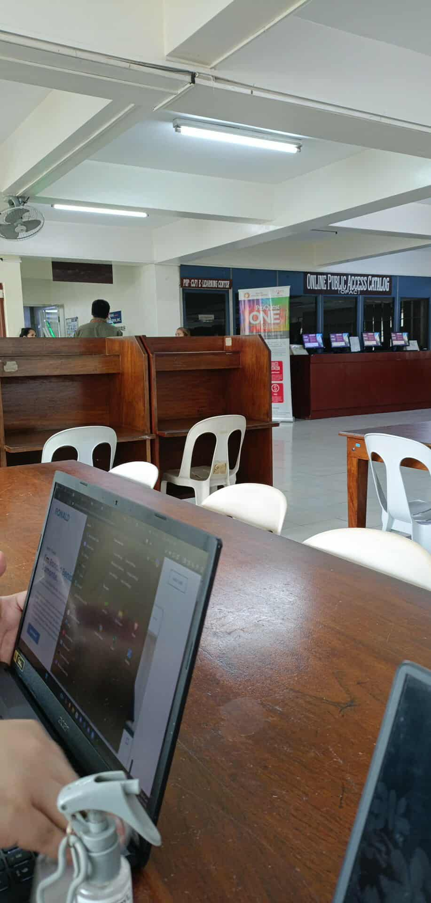
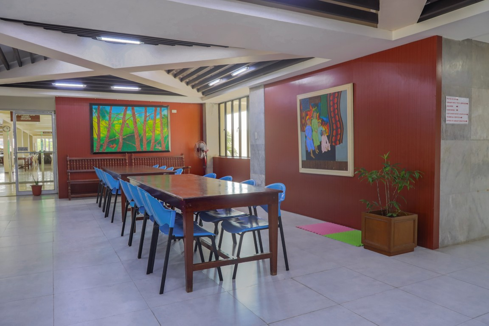
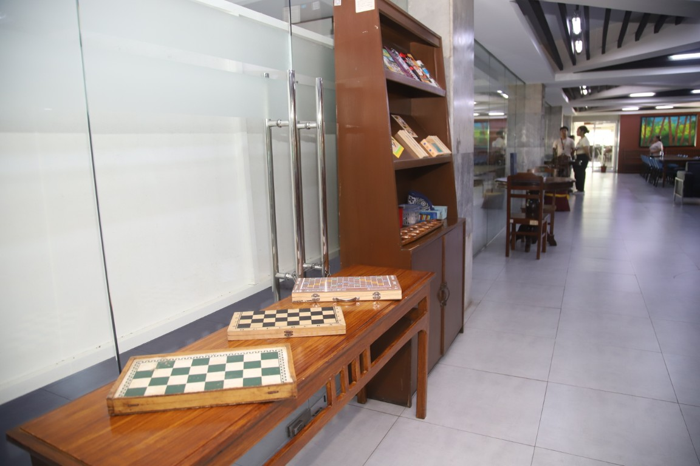

The Ninoy Aquino Library and Learning Resource Center (NALLRC), commonly known as the PUP Main Library, is the central information and research facility of the Polytechnic University of the Philippines, Sta. Mesa. Named in honor of Senator Benigno “Ninoy” Aquino Jr., the building serves as a symbol of knowledge, freedom, and continuous learning within the university.
Significance and Features:
- Houses a vast collection of books, journals, theses, digital archives, and multimedia resources across various disciplines.
- Provides study areas, computer sections, and discussion rooms, promoting both individual and collaborative learning.
Other Images:


